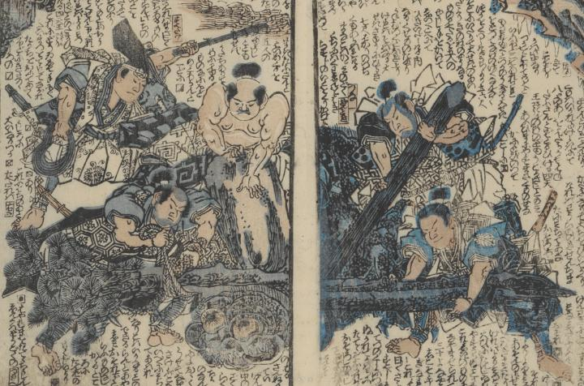

大蜘蛛の姿となった土蜘蛛を、源頼朝と四天王が木や石、縄で押さえつけようとしている。
著作者：一龍齋國久／出典：親書誌：U426_nichibunken_0431：頼光一代記圖繪／日付：2016／資源識別子：U426_nichibunken_0431_0007_0000
Copyright (c)2010- International Research Center for Japanese Studies, Kyoto, Japan. All rights reserved.